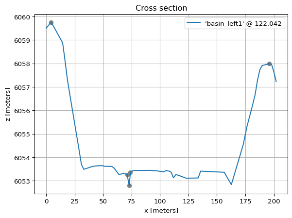

import mikeio1d
res = mikeio1d.open('../data/network.res1d')
res<mikeio1d.Res1D>Res1D is the main interface for accessing data on a Network.
Locations are where model results exist in the network. The main location types are nodes, reaches, and catchments. Each of these location types are accessible via a Res1D object.
Specific locations are accessible via their unique ID.
Quantities are the actual model results, which can be read into a DataFrame or plotted directly.
| WaterLevel:101 | |
|---|---|
| 1994-08-07 16:35:00.000 | 195.931503 |
| 1994-08-07 16:36:01.870 | 195.931595 |
| 1994-08-07 16:37:07.560 | 195.931625 |
| 1994-08-07 16:38:55.828 | 195.931656 |
| 1994-08-07 16:39:55.828 | 195.931656 |
Quantity collections enable reading a specific quantity for many locations at once.
| count | mean | std | min | 25% | 50% | 75% | max | |
|---|---|---|---|---|---|---|---|---|
| Discharge:100l1:23.8414 | 110.0 | 0.014078 | 0.026875 | 0.000006 | 0.000636 | 0.001032 | 0.005988 | 0.099751 |
| Discharge:101l1:33.218 | 110.0 | -0.000034 | 0.005649 | -0.022655 | 0.000004 | 0.000005 | 0.000022 | 0.019202 |
| Discharge:102l1:5.46832 | 110.0 | 0.069058 | 0.100331 | -0.011316 | 0.003062 | 0.017987 | 0.096062 | 0.326383 |
| Discharge:103l1:13.0327 | 110.0 | -0.000011 | 0.001084 | -0.006748 | 0.000002 | 0.000017 | 0.000337 | 0.001056 |
| Discharge:104l1:17.2065 | 110.0 | 0.000005 | 0.000002 | 0.000003 | 0.000005 | 0.000005 | 0.000005 | 0.000025 |
Xns11 is the main interface for accessing cross section data.

Access a cross section’s raw info as a DataFrame.
| markers | marker_labels | x | z | resistance | |
|---|---|---|---|---|---|
| 0 | 0.000 | 4059.508 | 25.0 | ||
| 1 | 2.062 | 4059.624 | 25.0 | ||
| 2 | 1 | Left Levee Bank (1) | 4.124 | 4059.754 | 25.0 |
| 3 | 6.186 | 4059.607 | 25.0 | ||
| 4 | 14.435 | 4058.882 | 25.0 |
Access a cross section’s processed info as a DataFrame.
| level | flow_area | radius | storage_width | additional_storage_area | resistance | conveyance_factor | |
|---|---|---|---|---|---|---|---|
| 0 | 4052.803000 | 0.000000 | 0.000000 | 0.000000 | 0.0 | 25.0 | 0.000000 |
| 1 | 4052.944857 | 0.160191 | 0.075978 | 2.743476 | 0.0 | 25.0 | 0.718409 |
| 2 | 4053.086714 | 0.790062 | 0.165315 | 6.136873 | 0.0 | 25.0 | 5.949433 |
| 3 | 4053.228571 | 3.633195 | 0.172199 | 29.866016 | 0.0 | 25.0 | 28.113531 |
| 4 | 4053.370429 | 9.264321 | 0.251109 | 50.128968 | 0.0 | 25.0 | 92.185348 |